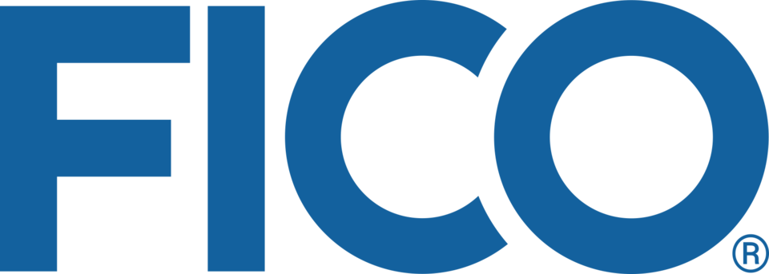

FICO
FICO는 소비자 신용위험을 측정하는 신용평점 서비스에 초점을 둔 미국 데이터 분석 기업이다. 법인명은 Fair Isaac Corporation이며, FICO score는 미국 소비자 대출에서 널리 사용하는 지표이다.
최종 업데이트

FICO는 어떤 브랜드인가
FICO는 신용평점 서비스를 중심으로 데이터 분석 사업을 수행하는 미국 기업이다. FICO score는 소비자의 신용위험을 측정하며 미국 소비자 대출 시장에서 지속적으로 활용하는 지표이다.
대출기관은 이 점수로 잠재 차입자의 신용도를 판단한다. 2013년 대출기관은 FICO score를 10 billion건 넘게 구매했으며, 미국 소비자 약 30 million명이 자신의 점수를 직접 확인했다.
회사는 2020 회계연도에 $1.29 billion의 매출을 보고했다.
FICO는 어떻게 시작되고 성장했나
FICO는 Bill Fair와 Earl Isaac이 1956년 Fair, Isaac and Company라는 이름으로 설립한 기업이다. 두 사람은 캘리포니아 멘로파크의 Stanford Research Institute에서 근무하며 만났고, 설립 2년 뒤 첫 신용평점 시스템을 판매하면서 미국 대출기관 50곳에 이를 제안했다.
회사는 1987년 7월 공개 기업이 되었고 1989년 첫 범용 FICO score를 출시했다. 2003년 회사명을 Fair Isaac Corporation으로 변경했다.
FICO의 브랜드 아이덴티티는 무엇인가
소비자 신용위험을 수치화한 FICO score가 미국 소비자 대출의 주요 신용도 판단 수단으로 정착한 점이 구별점이다.
FICO의 대표 제품과 서비스는 무엇인가
FICO score는 신용보고서를 바탕으로 소비자의 신용위험을 수치화하며, 대출기관이 잠재 차입자의 신용도를 판단할 때 활용한다. 기본 FICO score의 범위는 300부터 850까지이며, 산업별 점수의 범위는 250부터 900까지이다.
Equifax, Experian, TransUnion과 PRBC를 통해 점수를 제공하며 미국 외에는 멕시코와 캐나다 시장에도 제공한다. Fannie Mae와 Freddie Mac은 1995년부터 주택담보대출 대상 소비자를 판단하는 데 이 점수를 활용했다.
FICO는 지금 어떤 상태인가
회사는 1987년 7월 공개 기업이 되었으며 New York Stock Exchange 상장을 유지한다. 2020년부터 2023년 사이 FICO score의 기업 간 구매와 관련해 최소 10건의 반독점 집단소송이 제기됐고, 2023년 법원은 원고 측이 소송을 진행할 충분한 증거를 제시했다고 판단했다.
2024년 Josh Hawley는 반경쟁적 관행에 대한 조사를 촉구하는 서한을 미국 법무부 반독점 부서에 전달했다.
FICO 로고는 어떻게 변해왔나
자주 묻는 질문
FICO는 어느 나라 브랜드인가요?
FICO는 미국의 기술·전자 브랜드입니다.
FICO는 언제 설립되었나요?
FICO는 1956년 설립되었습니다.
FICO의 브랜드 아이덴티티는 무엇인가요?
소비자 신용위험을 수치화한 FICO score가 미국 소비자 대출의 주요 신용도 판단 수단으로 정착한 점이 구별점이다.
FICO의 대표 제품은 무엇인가요?
FICO score는 신용보고서를 바탕으로 소비자의 신용위험을 수치화하며, 대출기관이 잠재 차입자의 신용도를 판단할 때 활용한다.
FICO는 현재 어떤 상태인가요?
회사는 1987년 7월 공개 기업이 되었으며 New York Stock Exchange 상장을 유지한다.
FICO의 창업자는 누구인가요?
FICO의 창업자는 Bill Fair, Earl Isaac입니다(위키데이터 기준).
FICO의 본사는 어디에 있나요?
FICO의 본사는 산호세에 있습니다(위키데이터 기준).
출처와 검증
FICO 관련 참고: 공식 웹사이트 · 위키데이터 Q1392999 · 영어 위키백과. 브랜드명은 한글과 원어를 함께 표기하되 데이터에 없는 표기는 만들지 않습니다. 기원 국가·설립연도는 검수된 정의문에서 확인된 값을 우선하고, 없을 때만 공식 웹사이트 URL이 일치하는 위키데이터 개체의 값을 씁니다. 위키데이터 값은 2026-09-12 기준입니다.